Giotto provides import utilities for some technologies. These link to
provided data output directories and then allow piecewise import of
data. The direct access to the underlying read functions also allows for
finer control over some behaviors that are only available as defaults in
the wrapping createGiotto*Object() convenience
functions.
NanoString CosMx
This importer works with CosMx output directories with the following structure by default.
CellComposite (folder of images)
CellLabels (folder of images)
CellOverlay (folder of images)
CompartmentLabels (folder of images)
experimentname_exprMat_file.csv (file)
experimentname_fov_positions_file.csv (file)
experimentname_metadata_file.csv (file)
experimentname_tx_file.csv (file)However, note that these individual functions also have path params,
allowing alternative paths to be provided if the default expected
locations are incorrect or if specific files should be used. The
provided create_gobject() function is just a combination of
these more granular load functions along with detection of data from
expected locations in the output directory.
Load Pancreas WTX dataset
library(Giotto)
?importCosMx
# create CosmxReader
cosmx <- importCosMx()
force(cosmx)Giotto <CosmxReader>
dir :
version : default
slide : 1
fovs : all
micron : FALSE
offsets : Update CosmxReader with params
cosmx$cosmx_dir <- "/path/to/data"
cosmx$fovs <- c(51:52) # subset of FOVs to load if desired
force(cosmx)## Giotto <CosmxReader>
## dir : /projectnb/rd-s[...]Multiplexing_RNA/CosMx/Pancreas_WTX/
## slide : 1
## fovs : 51, 52
## micron : FALSE
## offsets : found
## funs : load_transcripts()
## load_polys()
## load_expression()
## load_images()
## load_cellmeta()
## create_gobject()Set cosmx$micron <- TRUE if desired to load data
scaled to microns.
For this dataset, the scalefactor is 0.12028 px -> micron (provided
by Nanostring in the ReadMe.html).
You can set an alternative specific scalefactor by using
cosmx$px2um <- ??
FOV shifts
The FOV shifts/positions info can be found in $offsets.
They are auto-detected from either the metadata or transcripts
information when the cosmx_dir is provided.
force(cosmx$offsets)## Key: <fov>
## fov x y
## <int> <num> <num>
## 1: 51 52439.04 41925.408
## 2: 52 52439.04 37669.372
## 3: 53 52439.04 33413.336
## 4: 54 56695.08 33413.336
## 5: 55 56695.08 37669.372
## 6: 56 56695.08 41925.408
## 7: 57 60951.12 41925.408
## 8: 58 60951.12 37669.372
## 9: 59 60951.12 33413.336
## 10: 60 51470.54 8512.071
## 11: 61 51470.54 4256.036
## 12: 62 51470.54 0.000
## 13: 63 55726.59 0.000
## 14: 64 55726.59 4256.036
## 15: 65 55726.59 8512.071
## 16: 66 59982.63 8512.071
## 17: 67 59982.63 4256.036
## 18: 68 59982.63 0.000When offsets are present or calculated, they can also be plotted to get an idea of the available FOVs. The numbers are where the upper left corners of the FOV are positioned.
plot(cosmx)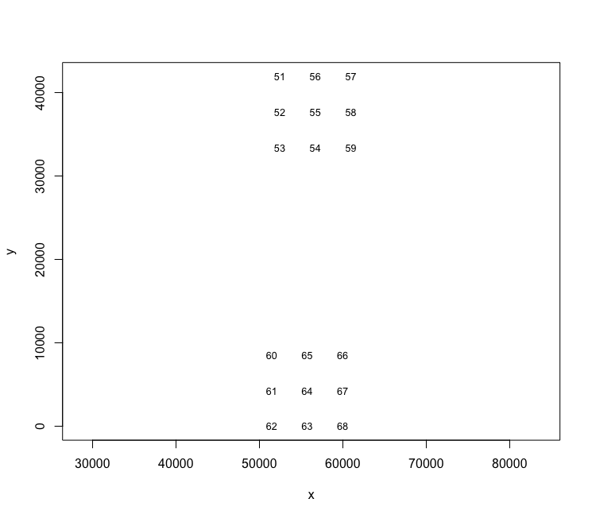
If the offsets are innaccurate or cannot be auto detected (or you
would like to manually spatially re-arrange FOV placements), they can
also be set. Input must be a data.table with cols
fov, x, y of types
integer, numeric, numeric. You
can set it like this:
# cosmx$offsets <- ??Load data piece-wise
# Load polygons, transcripts, and images
polys <- cosmx$load_polys()
plot(polys)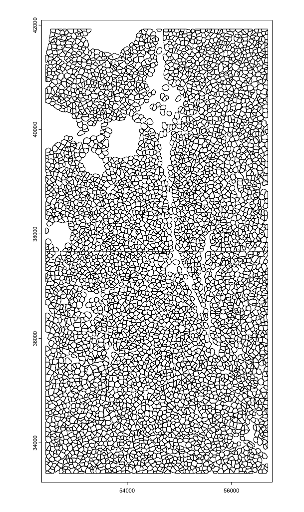
tx <- cosmx$load_transcripts(
feat_type = c("rna", "negprobes", "syscontrolcodes"),
split_keyword = list("Negative", "SystemControl")
)
plot(tx$rna, dens = TRUE)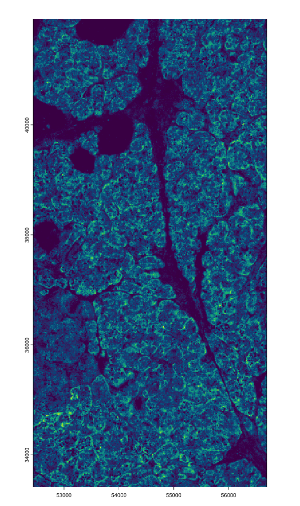
# tx vs poly overlap
plot(polys, border = "red", lwd = 0.3, add = TRUE)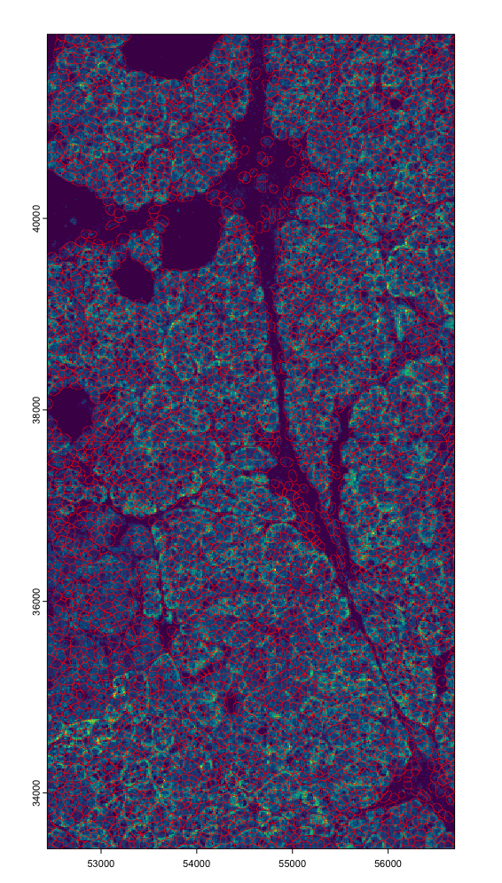
imgs <- cosmx$load_images()
imgs_ext <- lapply(imgs, ext) |> Reduce(f = `+`)
plot(imgs_ext)
invisible(lapply(imgs, plot, add = TRUE, ext = imgs_ext))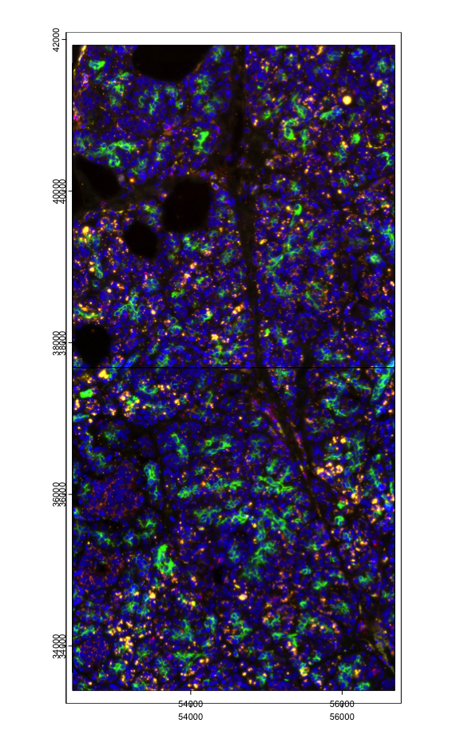
cx <- cosmx$load_cellmeta()
force(cx)## An object of class cellMetaObj
## spat_unit : "cell"
## feat_type : "rna"
## provenance: cell
##
## cell_ID Area AspectRatio Width Height Mean.PanCK Max.PanCK
## <char> <int> <num> <int> <int> <int> <int>
## 1: c_1_51_1 5997 1.39 103 74 1565 5576
## 2: c_1_51_2 1976 2.47 89 36 594 2260
## 3: c_1_51_3 2664 1.34 71 53 989 2812
## Mean.CD68_CK8_18 Max.CD68_CK8_18 Mean.CD298_B2M Max.CD298_B2M Mean.CD45
## <int> <int> <int> <int> <int>
## 1: 1701 6376 2799 8980 221
## 2: 154 636 930 1864 108
## 3: 135 728 1134 2400 92
## Max.CD45 Mean.DAPI Max.DAPI X version Run_name Run_Tissue_name tissue
## <int> <int> <int> <int> <char> <char> <char> <char>
## 1: 996 1155 3476 1 v6 Slide_S1 Pancreas Pancreas
## 2: 360 1126 2652 1 v6 Slide_S1 Pancreas Pancreas
## 3: 320 794 1884 1 v6 Slide_S1 Pancreas Pancreas
## Panel assay_type slide_ID unassignedTranscripts nCount_RNA nFeature_RNA
## <char> <char> <int> <num> <int> <int>
## 1: WTX RNA 1 0.0781346 315 202
## 2: WTX RNA 1 0.0781346 346 143
## 3: WTX RNA 1 0.0781346 508 184
## nCount_negprobes nFeature_negprobes nCount_falsecode nFeature_falsecode
## <int> <int> <int> <int>
## 1: 0 0 4 4
## 2: 0 0 3 2
## 3: 0 0 5 5
## Area.um2
## <num>
## 1: 86.76163
## 2: 28.58779
## 3: 38.54144
ex <- cosmx$load_expression(
feat_type = c("rna", "negprobes", "syscontrolcodes"),
split_keyword = list("Negative", "SystemControl")
)
force(ex)## [[1]]
## An object of class exprObj : "raw"
## spat_unit : "cell"
## feat_type : "rna"
## provenance: cell
##
## contains:
## 18946 x 5534 sparse Matrix of class "dgCMatrix"
##
## A1BG . . . 1 . . . . . . . . ......
## A1CF . 1 . 2 . . . . . 1 . . ......
## A2M . . . . . . . . . . . . ......
##
## ........suppressing 5522 columns and 18940 rows in show(); maybe adjust options(max.print=, width=)
##
## ZYX . . . 1 . . . . . . . . ......
## ZZEF1 . . . . . . . . . . . . ......
## ZZZ3 . . . . . . . . . . . . ......
##
## First four colnames:
## c_1_51_1 c_1_51_2 c_1_51_3 c_1_51_4
##
## [[2]]
## An object of class exprObj : "raw"
## spat_unit : "cell"
## feat_type : "negprobes"
## provenance: cell
##
## contains:
## 50 x 5534 sparse Matrix of class "dgCMatrix"
##
## Negative1 . . . . . . . . . . . . . ......
## Negative10 . . . . . . . . . . . . . ......
## Negative11 . . . . . . . . . . . . . ......
##
## ........suppressing 5521 columns and 44 rows in show(); maybe adjust options(max.print=, width=)
##
## Negative7 . . . . . . . . . . . . . ......
## Negative8 . . . . . . . . . . . . . ......
## Negative9 . . . . . . . . . . . . . ......
##
## First four colnames:
## c_1_51_1 c_1_51_2 c_1_51_3 c_1_51_4
##
## [[3]]
## An object of class exprObj : "raw"
## spat_unit : "cell"
## feat_type : "syscontrolcodes"
## provenance: cell
##
## contains:
## 2735 x 5534 sparse Matrix of class "dgCMatrix"
##
## SystemControl1 . . . . . . . . . . . . ......
## SystemControl10 . . . . . . . . . . . . ......
## SystemControl100 . . . . . . . . . . . . ......
##
## ........suppressing 5522 columns and 2729 rows in show(); maybe adjust options(max.print=, width=)
##
## SystemControl997 . . . . . . . . . . . . ......
## SystemControl998 . . . . . . . . . . . . ......
## SystemControl999 . . . . . . . . . . . . ......
##
## First four colnames:
## c_1_51_1 c_1_51_2 c_1_51_3 c_1_51_4The feat_type and split_keyword params used
here for load_transcripts() and
load_expression() are also different than those used for
the lung12/lung13 legacy datasets. This is because the diagnostic probes
used in this dataset are different than those older datasets. The
feat_type and split_keyword params you use
should be tailored for whichever probe types you have in your data.
Create giotto object
It is possible to load in the expression and additional metadata from NanoString for a set of information that may not fully agree with how Giotto normally calculates counts/cell (but should be very similar).
With pre-made aggregate info
With Giotto’s aggregation workflow, you would usually run
calculateOverlap() and overlapToMatrix() after
creating the object in order to aggregate the transcript detections by
polygon to create the count matrix, but if the NanoString pre-made
expression was loaded, you would skip this step. Running the aggregation
workflow would either replace the NanoString values or make them
invalid.
# LOADING PREMADE NANOSTRING EXPRESSION MATRICES AND METADATA
g <- cosmx$create_gobject(
feat_type = c("rna", "negprobes", "syscontrolcodes"),
split_keyword = list("Negative", "SystemControl"),
load_expression = TRUE)
# ! important !
# Downstream, skip `calculateOverlap()` and `overlapToMatrix()` if expression was loaded## Start centroid calculation for polygon information
## layer: cell
force(g)## An object of class giotto
## >Active spat_unit: cell
## >Active feat_type: rna
## [SUBCELLULAR INFO]
## polygons : cell
## features : rna negprobes syscontrolcodes
## [AGGREGATE INFO]
## expression -----------------------
## [cell][rna] raw
## [cell][negprobes] raw
## [cell][syscontrolcodes] raw
## spatial locations ----------------
## [cell] raw
## attached images ------------------
## images : 4 items...
##
##
## Use objHistory() to see steps and params usedOR Loading only raw data (default behavior)
calculateOverlap() and overlapToMatrix()
should be run when only raw data is loaded to use Giotto’s aggregation
pipeline to generate the expression matrix.
# SKIPPING PREMADE NANOSTRING EXPRESSION MATRICES (default)
g <- cosmx$create_gobject()
# ! important !
# You should run `calculateOverlap()` and `overlapToMatrix()` with this.
g <- calculateOverlap(
g,
name_overlap = "rna",
spatial_info = "cell",
feat_info = "rna",
return_gobject = TRUE,
verbose = FALSE
)
g <- overlapToMatrix(
g,
name = "raw",
poly_info = "cell",
feat_info = "rna",
type = "point",
return_gobject = TRUE,
verbose = FALSE
)Some plots
spatInSituPlotPoints(g,
feats = list("rna" = c("ADIPOQ", "CD3E", "PTPRC", "CD79A", "VIM")),
show_image = TRUE,
image_name = c("composite_fov051", "composite_fov052"),
point_size = 0.8,
feats_color_code = c("magenta", "red", "yellow", "goldenrod", "cyan"),
show_polygon = TRUE,
polygon_alpha = 0,
polygon_color = "grey",
polygon_line_size = 0.05,
use_overlap = FALSE, # since none exist (skipped)
)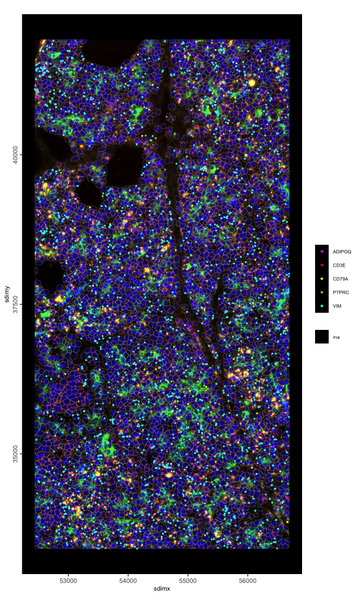
spatInSituPlotPoints(g,
show_image = TRUE,
image_name = c("composite_fov051", "composite_fov052"),
show_polygon = TRUE,
polygon_fill_as_factor = FALSE,
polygon_fill = "Max.CD45",
polygon_color = "grey",
polygon_line_size = 0.05
)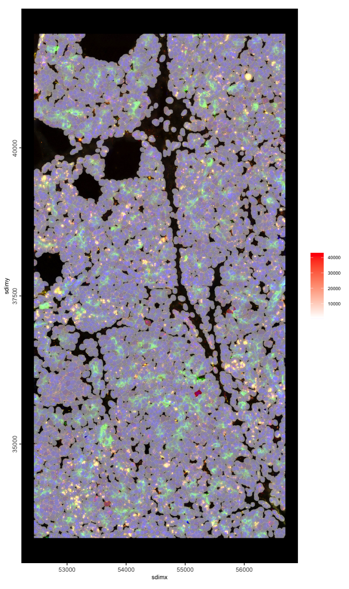
10X Xenium
Load Breast Cancer Pre-Release Dataset
xenium <- importXenium(xenium_dir = "/path/to/data/")
force(xenium)Giotto <XeniumReader>
dir : /path/to/data/
qv_cutoff : 20
filetype : transcripts -- parquet
boundaries -- parquet
expression -- h5
cell_meta -- parquet
funs : load_transcripts()
load_polys()
load_cellmeta()
load_featmeta()
load_expression()
load_image()
load_aligned_image()
create_gobject()Update XeniumReader with params
# assign preferences for detected filetypes
xenium$filetype <- list(transcripts = "parquet",
boundaries = "parquet",
expression = "h5",
cell_meta = "csv")
xenium$qv <- 10 # set a custom QV cutoff
# see also: https://www.10xgenomics.com/support/software/xenium-onboard-analysis/latest/algorithms-overview/xoa-algorithms#qvs
force(xenium)Giotto <XeniumReader>
dir : /path/to/data/
qv_cutoff : 10
filetype : transcripts -- parquet
boundaries -- parquet
expression -- h5
cell_meta -- csv
funs : load_transcripts()
load_polys()
load_cellmeta()
load_featmeta()
load_expression()
load_image()
load_aligned_image()
create_gobject()Load data piece-wise
tx <- xenium$load_transcripts()
# plot(tx$rna, dens = TRUE) # this would take ~30sec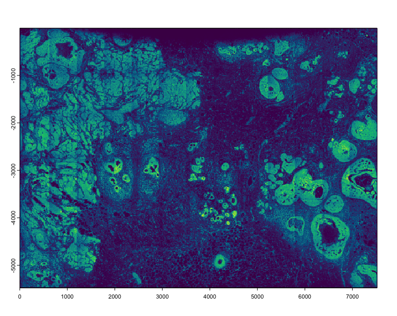
# a much faster preview can be done by sampling and decreasing the rasterization size
plot(tx$rna[sample(nrow(tx$rna), 5e5)], dens = TRUE, raster_size = 300)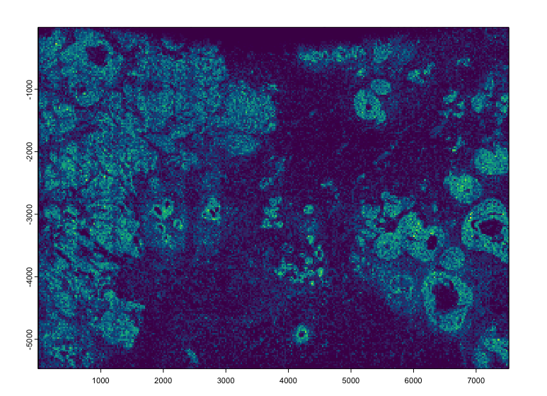
plot(tx$NegControlCodeword)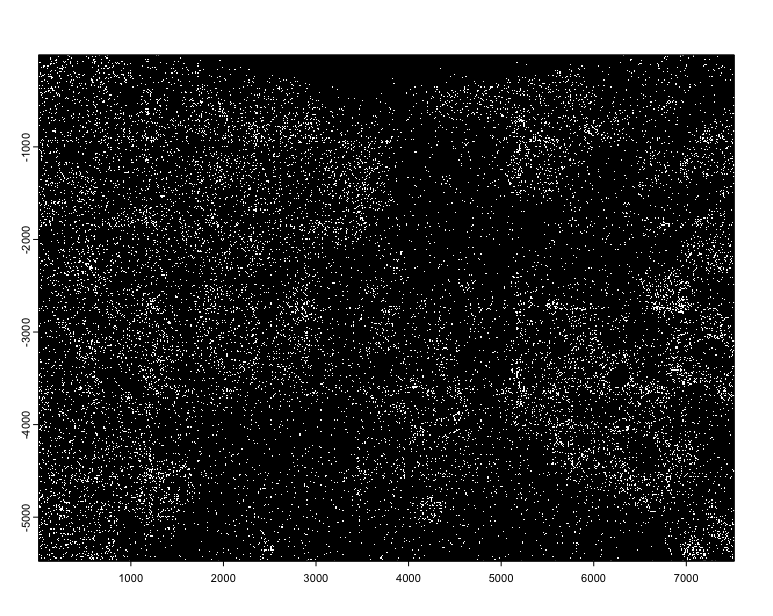
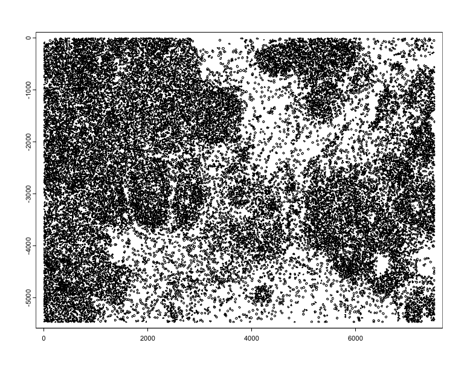
plot(tx$rna, ext = c(2000, 3000, -4000, -3000), dens = TRUE)
plot(polys, add = TRUE, border = "red", lwd = 0.3)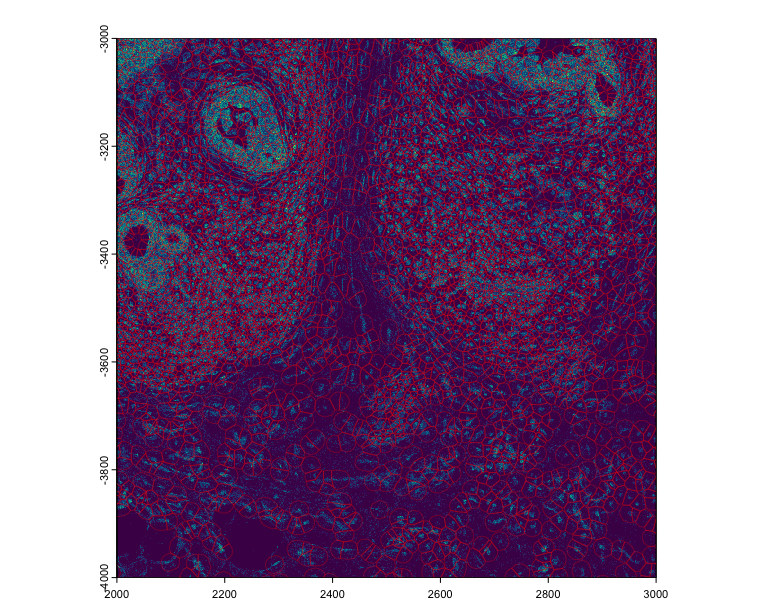
# loads the staining images taken during the run (at least DAPI should be available)
imgs <- xenium$load_image()
plot(imgs[[1]], max_intensity = 1000)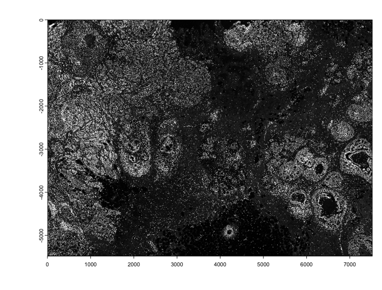
xenium$load_aligned_image() can be used to load in
affine aligned images (such as those produced from Xenium Explorer)
# this is the 10X output, and thus is based on QV >= 20
ex <- xenium$load_expression()
force(ex)[[1]]
An object of class exprObj : "raw"
spat_unit : "cell"
feat_type : "rna"
provenance: cell
contains:
313 x 167780 sparse Matrix of class "dgCMatrix"
ABCC11 . . . . . . . . . . . . . ......
ACTA2 . . . . . . . 1 . . . . 1 ......
ACTG2 . 1 . . . . 1 . . . . . 1 ......
........suppressing 167767 columns and 307 rows in show(); maybe adjust options(max.print=, width=)
ZEB1 . . . . . . . . . 2 . . . ......
ZEB2 . . . . 1 1 . . 2 2 1 . . ......
ZNF562 . . . . . . . . . . . . . ......
First four colnames:
1 2 3 4
[[2]]
An object of class exprObj : "raw"
spat_unit : "cell"
feat_type : "NegControlProbe"
provenance: cell
contains:
28 x 167780 sparse Matrix of class "dgCMatrix"
NegControlProbe_00042 . . . . . . . . . . . . . ......
NegControlProbe_00041 . . . . . . . . . . . . . ......
NegControlProbe_00039 . . . . . . . . . . . . . ......
........suppressing 167767 columns and 22 rows in show(); maybe adjust options(max.print=, width=)
antisense_LGI3 . . . . . . . . . . . . . ......
antisense_BCL2L15 . . . . . . . . . . . . . ......
antisense_ADCY4 . . . . . . . . . . . . . ......
First four colnames:
1 2 3 4
[[3]]
An object of class exprObj : "raw"
spat_unit : "cell"
feat_type : "NegControlCodeword"
provenance: cell
contains:
41 x 167780 sparse Matrix of class "dgCMatrix"
NegControlCodeword_0500 . . . . . . . . . . . . . ......
NegControlCodeword_0501 . . . . . . . . . . . . . ......
NegControlCodeword_0502 . . . . . . . . . . . . . ......
........suppressing 167767 columns and 35 rows in show(); maybe adjust options(max.print=, width=)
NegControlCodeword_0538 . . . . . . . . . . . . . ......
NegControlCodeword_0539 . . . . . . . . . . . . . ......
NegControlCodeword_0540 . . . . . . . . . . . . . ......
First four colnames:
1 2 3 4
[[4]]
An object of class exprObj : "raw"
spat_unit : "cell"
feat_type : "UnassignedCodeword"
provenance: cell
contains:
159 x 167780 sparse Matrix of class "dgCMatrix"
BLANK_0006 . . . . . . . . . . . . . ......
BLANK_0013 . . . . . . . . . . . . . ......
BLANK_0037 . . . . . . . . . . . . . ......
........suppressing 167767 columns and 153 rows in show(); maybe adjust options(max.print=, width=)
BLANK_0489 . . . . . . . . . . . . . ......
BLANK_0497 . . . . . . . . . . . . . ......
BLANK_0499 . . . . . . . . . . . . . ......
First four colnames:
1 2 3 4
# Statistics in this output also maybe dependent on QV >= 20
cx <- xenium$load_cellmeta()
force(cx)An object of class cellMetaObj
spat_unit : "cell"
feat_type : "rna"
provenance: cell
dimensions: 167780 7
cell_ID transcript_counts control_probe_counts
<char> <int> <int>
1: 1 28 1
2: 2 94 0
3: 3 9 0
control_codeword_counts total_counts cell_area nucleus_area
<int> <int> <num> <num>
1: 0 29 58.38703 26.64219
2: 0 94 197.01672 42.13078
3: 0 9 16.25625 12.68891
# Statistics in this output also maybe dependent on QV >= 20
fx <- xenium$load_featmeta()
force(fx)An object of class featMetaObj
spat_unit : "cell"
feat_type : "rna"
provenance: cell
feat_ID ensembl type
<char> <char> <char>
1: ABCC11 ENSG00000121270 gene
2: ACTA2 ENSG00000107796 gene
3: ACTG2 ENSG00000163017 geneCreate giotto object
The giotto object with Xenium can also be made either
requesting cell metdata and expression to be loaded or not.
g <- xenium$create_gobject()
force(g)An object of class giotto
>Active spat_unit: cell
>Active feat_type: rna
dimensions : 480, 167780 (features, cells)
[SUBCELLULAR INFO]
polygons : cell nucleus
features : rna NegControlProbe UnassignedCodeword NegControlCodeword
[AGGREGATE INFO]
spatial locations ----------------
[cell] raw
[nucleus] raw
attached images ------------------
images : dapi
Use objHistory() to see steps and params usedGiotto object from piece-wise
Constructing a giotto analysis object from the read in
data is simple.
Start with an empty giotto object
g2 <- giotto()Data can then be added one by one.